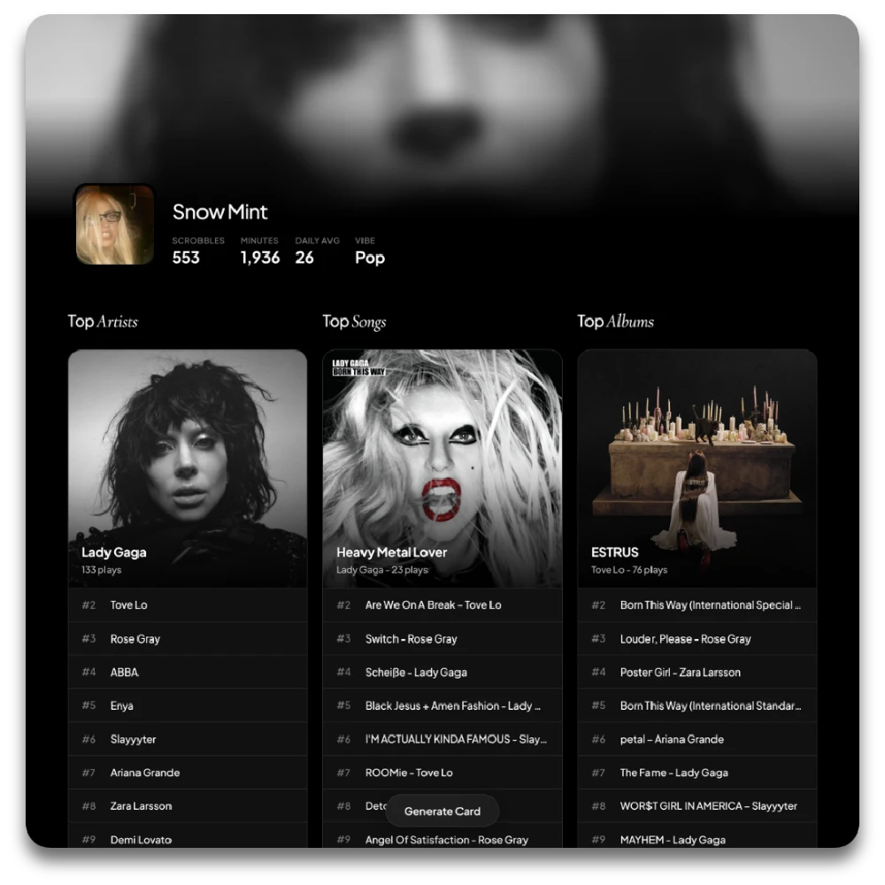
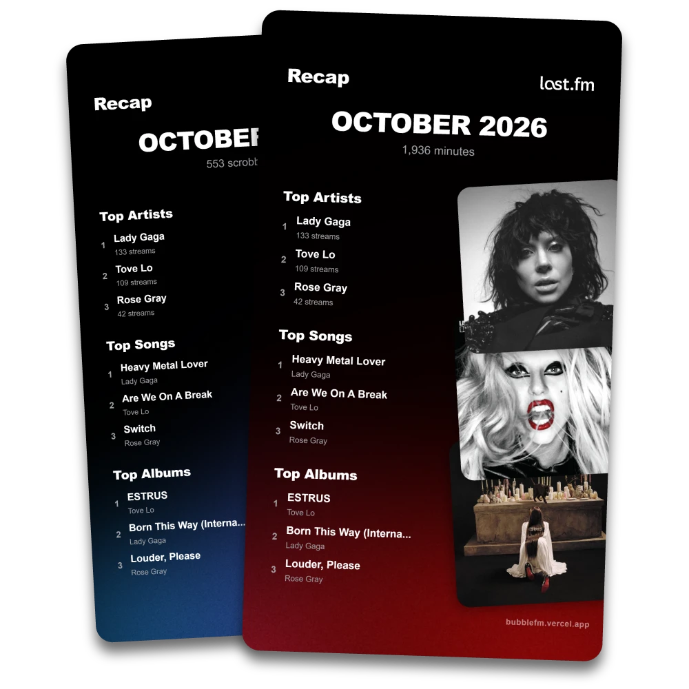

Visualize your Last.fm Charts
Enter your Last.fm username to generate aesthetic charts of your top artists, tracks, and total listening time.
Don't have a Last.fm account? Create one!
Detailed Monthly Listening Estimates
BubbleFM calculates precise monthly estimates of your listening time, daily averages, and music vibe from your Last.fm scrobbles. Explore rankings of your top artists, tracks, and albums for any month.

Generate Aesthetic, Shareable Reports
Turn your monthly listening statistics into stunning recap reports. Crafted with album artwork and customizable palettes, perfectly sized to share on Instagram Stories and socials.

Support BubbleFM
BubbleFM is free and open-source. If you enjoy using it, consider buying me a coffee to support development and server costs!